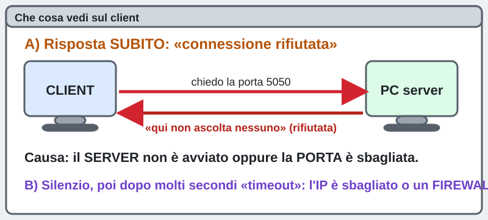
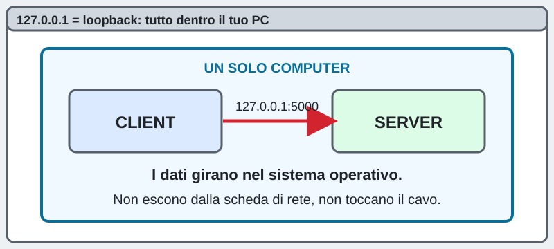
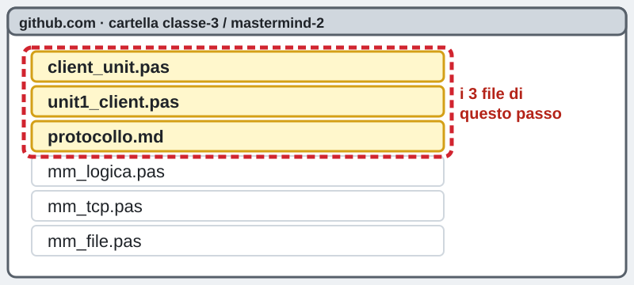
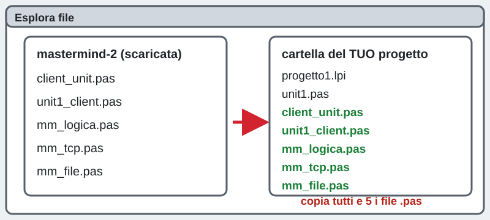
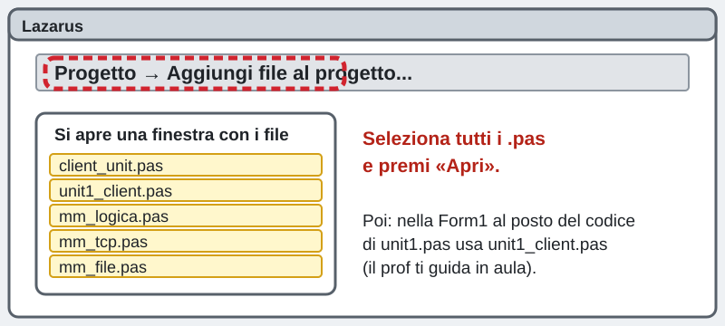
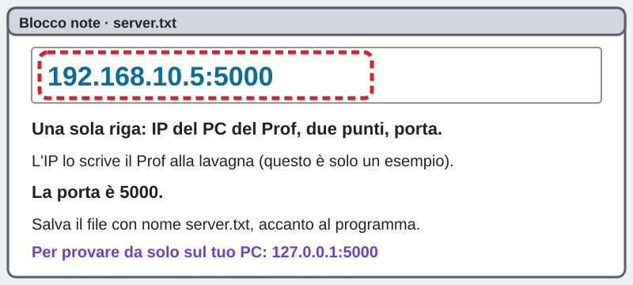
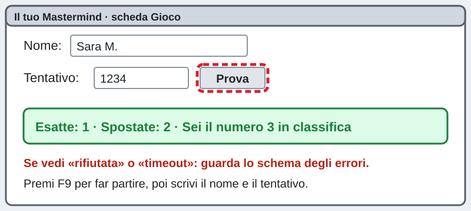

3INF · lunedì 02/11/2026 · Lazarus · Mastermind in rete
Mastermind in rete: client e server
Teoria semplice, con animazioni e un quiz
La pagina viene aggiornata spesso durante la lezione: premi F5 per vedere la versione nuova.
Chi sei?
Scrivi nome e cognome: serve per mandare il quiz.
Come si usa questa pagina
Leggi il PDF, guarda le animazioni, fai il quiz.
পিডিএফ পড়ো, অ্যানিমেশন দেখো, কুইজ করো।
1. Apri il PDF2. Guarda le animazioni3. Fai il quizIl PDF ha gli stessi schemi di questa pagina. Il quiz sta solo qui.
Sei bloccato? Scrivi la tua domanda nella casella dell'assistente in fondo alla pagina: ti risponde subito. Dal Prof vai solo se il PC non funziona.
আটকে গেছো? পেজের নিচে সহকারীর বক্সে প্রশ্ন লেখো: সে সঙ্গে সঙ্গে উত্তর দেবে।
IP e porta: palazzo e interno
L'IP dice quale computer.
আইপি (IP) বলে কোন কম্পিউটার।
La porta dice quale programma dentro quel computer.
পোর্ট বলে কোন প্রোগ্রাম।
Pensa a un palazzo: l'IP è l'indirizzo del palazzo. La porta è il numero dell'interno.
একটা বিল্ডিং ভাবো: আইপি হলো বিল্ডিংয়ের ঠিকানা। পোর্ট হলো ফ্ল্যাটের নম্বর।
Il numero della porta va da 0 a 65535.
পোর্টের নম্বর ০ থেকে ৬৫৫৩৫ পর্যন্ত।
1Guarda l'animazione: la lettera cerca il suo interno
Premi Avvia qui sotto e guarda dove va la lettera.
নিচে «Avvia» চাপো আর দেখো চিঠিটা কোথায় যায়।
La porta 5050 del server
Il server del Mastermind usa la porta 5050.
মাস্টারমাইন্ড সার্ভার ৫০৫০ পোর্ট ব্যবহার করে।
Anche il client ha una porta. La sceglie Windows, da solo, tra i numeri alti. Si chiama porta effimera: cambia a ogni collegamento.
ক্লায়েন্টেরও একটা পোর্ট থাকে। উইন্ডোজ নিজে বেছে নেয়। প্রতিবার সংযোগে এটা বদলায়।
Per questo venti client possono andare tutti alla stessa porta 5050. Ognuno parte dalla sua porta.
তাই বিশটি ক্লায়েন্ট সবাই একই ৫০৫০ পোর্টে যেতে পারে। প্রত্যেকের নিজের পোর্ট আছে।
2Guarda l'animazione: venti client, una porta
Premi Avvia: i client si collegano uno alla volta.
«Avvia» চাপো: ক্লায়েন্টগুলো একে একে যুক্ত হয়।
I livelli: scatole dentro scatole
Il gioco Mastermind sta nel livello applicazione.
গেমটা অ্যাপ্লিকেশন স্তরে আছে।
TCP e le porte stanno nel livello trasporto.
টিসিপি আর পোর্ট ট্রান্সপোর্ট স্তরে আছে।
L'IP sta nel livello rete.
আইপি নেটওয়ার্ক স্তরে আছে।
Ogni livello mette il messaggio dentro una scatola più grande: messaggio, segmento, pacchetto, frame.
প্রতিটি স্তর বার্তাকে আরও বড় একটা বাক্সে ভরে।
3Guarda l'animazione: le scatole si annidano
Premi Avvia e guarda le scatole crescere intorno al messaggio.
«Avvia» চাপো আর দেখো বার্তার চারপাশে বাক্সগুলো কীভাবে বাড়ে।
TCP apre la connessione: l'handshake
TCP apre la connessione con tre messaggi. Si chiama handshake, cioè stretta di mano.
টিসিপি তিনটি বার্তা দিয়ে সংযোগ খোলে। একে হ্যান্ডশেক বলে।
1. Il client dice SYN: «posso collegarmi?»
১. ক্লায়েন্ট বলে SYN: «আমি কি যুক্ত হতে পারি?»
2. Il server risponde SYN+ACK: «sì, ci sono».
২. সার্ভার উত্তর দেয় SYN+ACK: «হ্যাঁ, আমি আছি»।
3. Il client chiude con ACK: «ricevuto».
৩. ক্লায়েন্ট ACK দিয়ে শেষ করে: «পেয়েছি»।
4Guarda l'animazione: i tre messaggi
Premi Avvia e conta i tre messaggi.
«Avvia» চাপো আর তিনটি বার্তা গুনো।
Quando non si collega: gli errori
«Connessione rifiutata»: arriva subito. Il server non è avviato, oppure la porta è sbagliata.
«সংযোগ প্রত্যাখ্যাত»: সঙ্গে সঙ্গে আসে। সার্ভার চালু নেই, অথবা পোর্ট ভুল।
Timeout: aspetti tanti secondi e poi esce l'errore. L'IP è sbagliato, oppure un firewall blocca.
টাইমআউট: অনেক সেকেন্ড অপেক্ষা করার পর ভুল আসে। আইপি ভুল, অথবা ফায়ারওয়াল আটকে দিচ্ছে।
5Guarda lo schema: rifiutata e timeout

127.0.0.1 si chiama loopback. Vuol dire «io stesso». I dati restano dentro il tuo computer: non escono dalla scheda di rete.
১২৭.০.০.১-কে লুপব্যাক বলে। মানে «আমি নিজে»। ডেটা তোমার কম্পিউটারের ভেতরেই থাকে।
6Guarda lo schema: il loopback

Poi fai il quiz
Il quiz sta in una pagina a parte: 8 domande, 1 punto ciascuna.
কুইজ আলাদা পেজে আছে: ৮টি প্রশ্ন, প্রতিটি ১ পয়েন্ট।
Vai al quizOra scrivi il tuo CLIENT
Il Prof farà girare il SERVER e accetterà tutti insieme. Tu scrivi il CLIENT, cioè il tuo Mastermind che parla col server.
স্যার সার্ভার চালাবেন, সবাইকে একসঙ্গে ঢুকতে দেবেন। তুমি তোমার ক্লায়েন্ট লেখো।
Il codice è già pronto in classe. Tu lo metti nel tuo progetto Lazarus.
কোড ক্লাসে তৈরি আছে। তুমি তোমার Lazarus প্রোজেক্টে বসাও।
1Trova i file su GitHub
Su github.com apri la cartella classe-3 / mastermind-2. Cerca i tre file evidenziati nello schema. Gli altri tre li dà il Prof.

github.com-এ cartella classe-3 / mastermind-2 খোলো। ছবিতে চিহ্নিত তিনটি ফাইল খোঁজো।
2Copia i file .pas nel tuo progetto
Scarica i file. Poi copiali nella cartella del tuo progetto, accanto a unit1.pas. Sono 5 file: client_unit.pas, unit1_client.pas, mm_logica.pas, mm_tcp.pas, mm_file.pas. Il file protocollo.md è il libretto che spiega le righe che il client e il server si scrivono: lo leggi con il Blocco note.

ফাইলগুলো ডাউনলোড করে নিজের প্রোজেক্ট ফোল্ডারে কপি করো।
3Aggiungili in Lazarus
In Lazarus: menu Progetto, poi Aggiungi file al progetto. Scegli i file .pas e premi Apri. Il programma usa solo unità che ci sono già in Lazarus (sockets e ssockets): non devi installare niente.

Lazarus-এ Progetto মেনু থেকে ফাইলগুলো যোগ করো। কিছু ইনস্টল করতে হবে না।
4Scrivi il file server.txt
Con il Blocco note scrivi una riga sola: l'IP del PC del Prof, due punti, 5050. Salvalo con nome server.txt accanto al programma. Il Prof scrive l'IP alla lavagna.

Blocco note-এ একটা লাইন লেখো: স্যারের পিসির আইপি, কোলন, ৫০৫০। ফাইলের নাম server.txt।
5Premi F9 e prova
Premi F9. Scrivi il tuo nome e un tentativo di 4 cifre, da 1 a 6. Premi Prova. Se esce un errore guarda lo schema del punto 5: rifiutata o timeout?

F9 চাপো। নাম আর ৪ সংখ্যার একটা চেষ্টা লেখো। «Prova» চাপো।
Bravo! Quando vedi la tua posizione in classifica, il tuo programma sta parlando con un altro computer. È programmazione di rete vera, come nei giochi online.